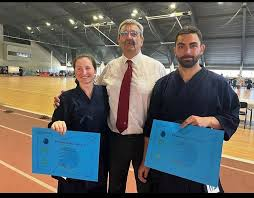
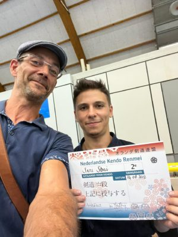
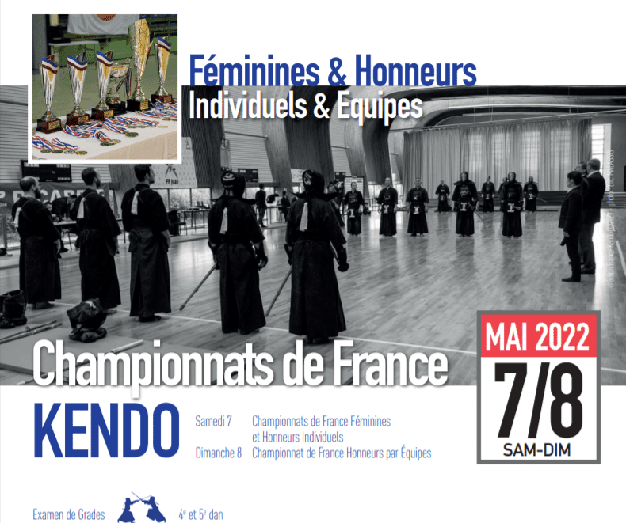
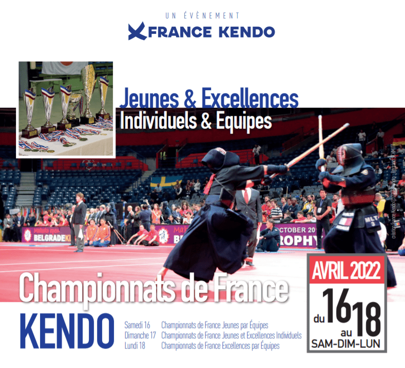
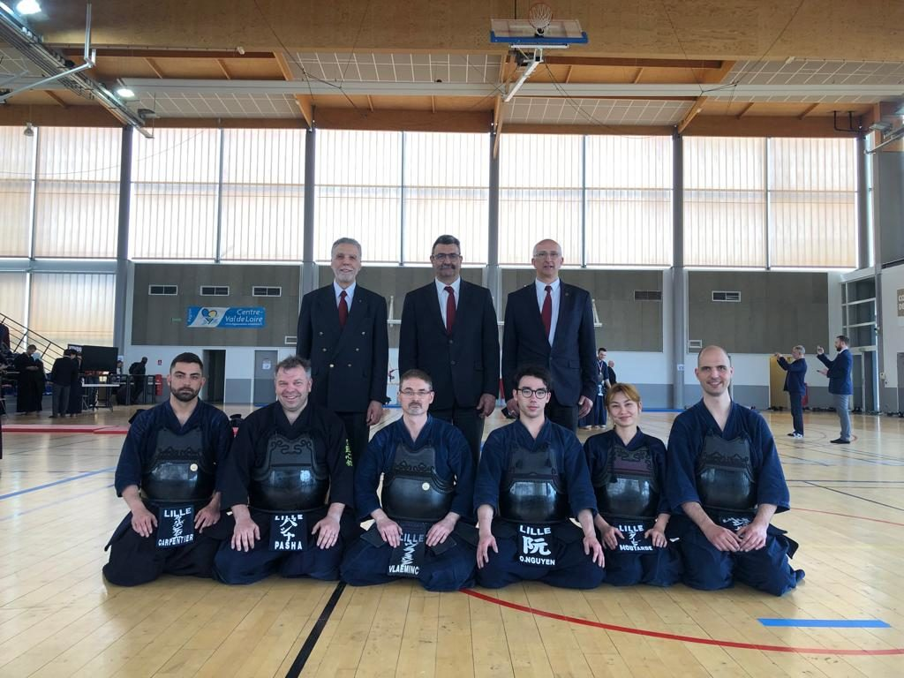
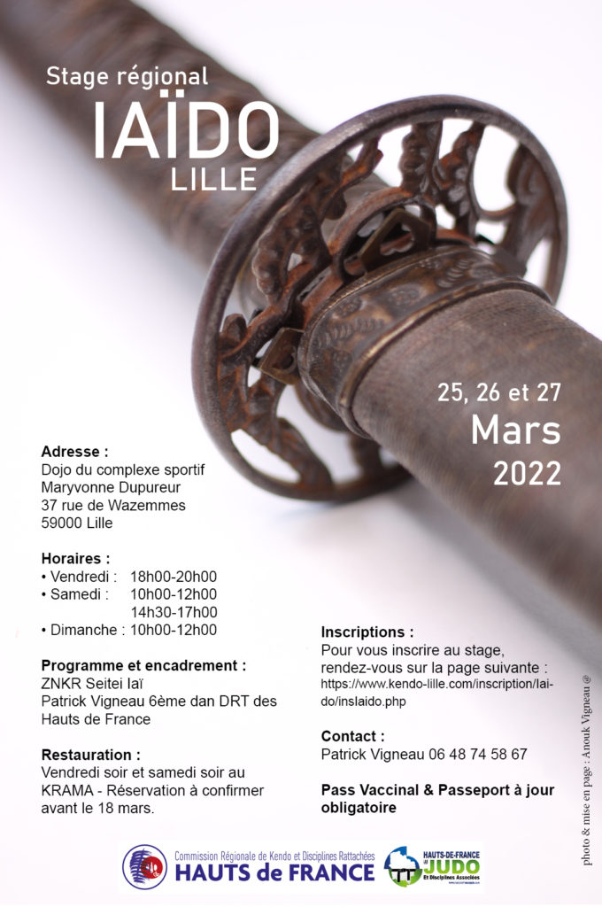
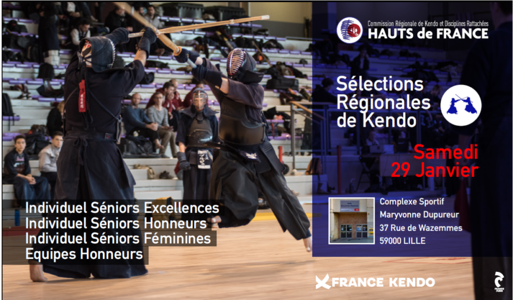
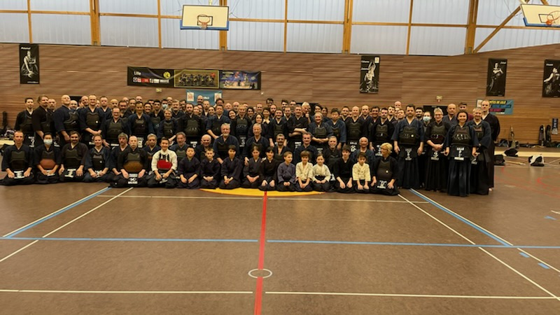
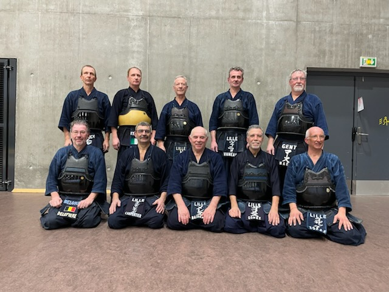
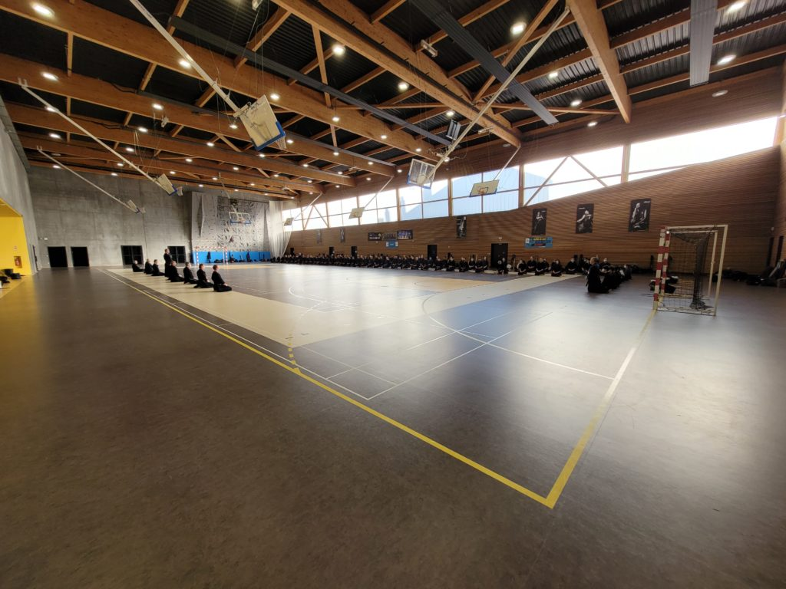

Le dimanche 31 juillet 2022, ont été reçus,
6e Dan – Jean CARPENTIER
7e Dan – Aurelia DESTOBBELER-BLANCHARD

Le dimanche 14 aout 2022, a été reçu,
2e Dan – Sami SBAI

Félicitations !
Le dimanche 31 juillet 2022, ont été reçus,
6e Dan – Jean CARPENTIER
7e Dan – Aurelia DESTOBBELER-BLANCHARD

Le dimanche 14 aout 2022, a été reçu,
2e Dan – Sami SBAI

Félicitations !
Nous sommes heureux de vous informer des belles réussites des membres du club ce week-end.


Lors de ces championnats les combattants du Club ont produit un Kendo de qualité, digne des enseignements reçus de nos anciens et des senseis que nous avons suivis pour nous perfectionner dans cet Art Martial:
Art, esthétique des combattants
Martial, détermination et efforts rassemblés dans de belles attitudes.
Bravo à tous et poursuivons inlassablement dans ces voies.
Dimanche 17 avril – Championnats de France individuels :
Jeunes et Excellences
Lundi 18 avril – Championnats de France Excellences par équipes
L’équipe du Club Lillois après une première place en poules perd dans les quarts de finale.

Bravo à
Jean CARPENTIER, Pasha VOLODARSKY, Philippe VLAEMINCK, Oscar NGUYEN, Kiyoko MOUTARDE et Jean-Philippe JOURDAN
Chers pratiquants de iaïdo,
Le Club Lillois organise le troisième stage des Hauts de France qui se déroulera les 25, 26 et 27 mars 2022 à Lille.
Merci de trouver les photos du stage sur le lien suivant:
https://box.mairie-lille.fr/sharing/tsG9kVJER

L’ensemble des pratiquants des clubs de notre région, des autres régions de France et nos amis Belges y sont chaleureusement conviés.
Ce stage s’adresse à tous les pratiquants, y compris les débutants.
Il se veut rassembler avant tout les iaïdoka de notre région, autour d’une pratique commune que sont les Kihon et la Zen Nippon Kendō Renmei Iaidō (Seitei-Iaï).
Pour vous inscrire en ligne vous pouvez suivre ce lien :
https://www.kendo-lille.com/inscription/Iaido/insIaido.php
Bonne pratique à tous et à très bientôt.
Patrick Vigneau
DTR des Hauts de France
Ce dimanche 20 janvier 2022, ont été reçus,
1er Dan – Youzo MOUTARDE – Emmanuel PAJANIPADEATCHY
4e Dan – Louis MOUTARDE – Pascal ARS – Guillaume DUMETZ – Olivier BAYART – Bruno VERMESSE
5e Dan – Cathy KOZAK – Didier KLUG
Félicitations !

INDIVIDUELS EXCELLENCES
INDIVIDUELS HONNEURS
INDIVIDUELS FEMININES
EQUIPES HONNEURS
500 photos du stage en téléchargement sur le lien:
https://box.mairie-lille.fr/sharing/oWTSRIOne



{kind=link}